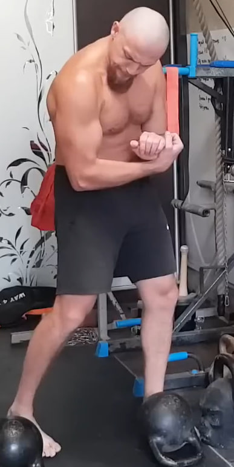
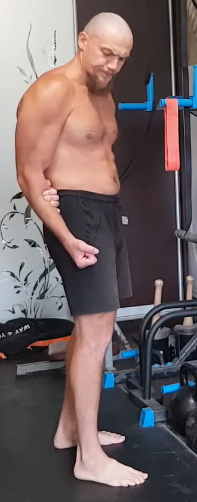
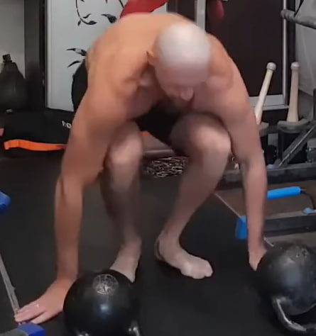
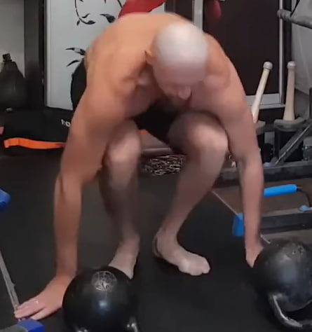
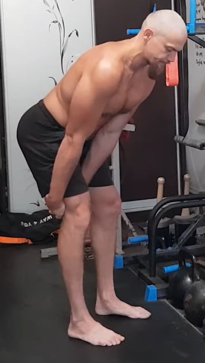

1. Rotura en tres puntos con toalla


Utiliza una toalla, cinturón de kimono, cadena o cualquier cinta que no se estire. Enrolla el material en las muñecas dejando unos 46 cm de distancia entre las manos. Trabaja en tres posiciones: delante del cuerpo con los brazos ligeramente flexionados, sobre la cabeza y detrás de la espalda. En cada punto inhala, tarda 3 segundos en entrar en la tensión, mantén 6 segundos de máxima fuerza como si realmente quisieras romper el objeto y usa 3 segundos para soltar. Completa 10 ciclos, cambiando ligeramente la altura y el ángulo para explorar nuevos puntos de tensión.
2. Bíceps isométrico con el brazo a 90 grados
Flexiona el brazo de trabajo formando un ángulo cercano a 90 grados frente al cuerpo. Con la otra mano sujeta firmemente el puño o la muñeca y empuja hacia abajo o hacia afuera, creando resistencia. El brazo de trabajo intenta seguir flexionándose, pero la mano de apoyo no le permite moverse, generando una tensión muy profunda en el bíceps. Mantén la contracción durante unos segundos y repite hasta completar 10 repeticiones por lado.
3. Isometría para el deltoides anterior con agarre detrás de la espalda
Coloca los brazos detrás de la espalda y engánchalos entre sí. Con la mano de apoyo sujeta firmemente el antebrazo del brazo de trabajo. El brazo de trabajo intenta elevarse hacia arriba detrás del cuerpo, mientras la mano de apoyo bloquea el movimiento y no le permite subir. Mantén una tensión constante en la parte frontal del deltoides siguiendo el ritmo habitual del programa: 3 segundos para entrar en tensión, 6 segundos de máxima fuerza y 3 segundos para soltar. Realiza 10 ciclos por lado.
4. Isometría “abrazo del codo” para la escápula

Cruza el brazo de trabajo frente al cuerpo y abrázalo por el codo o el antebrazo con la otra mano. El brazo de trabajo intenta llevar el codo hacia atrás y hacia afuera mientras la mano que abraza no le deja moverse. Se crea una isometría intensa en la escápula, el deltoide posterior y la parte alta de la espalda. Mantén la tensión unos segundos y repite hasta completar 10 repeticiones por lado.
5. Burpee sin flexión
 


Desde la posición de plancha, salta llevando los pies hacia adelante y luego realiza un salto vertical con los brazos abajo. No hay flexión de brazos. Completa 10 repeticiones manteniendo un ritmo fluido y el cuerpo compacto.
6. Saltos estrella desde sentadilla


Comienza en sentadilla completa con las manos cerca del suelo. Desde ahí, explota hacia arriba abriendo brazos y piernas en forma de estrella. Aterriza suave, vuelve a la sentadilla y repite 10 veces sin pausas.
7. Fondos con piernas elevadas en superficie paralela

Colócate entre dos taburetes, barras paralelas o cualquier soporte firme que permita apoyar las manos a los lados del cuerpo. Extiende las piernas al frente y rectas, manteniendo el cuerpo en una línea rígida. Desde esta posición baja el cuerpo flexionando los codos hacia atrás, sin dejar que los hombros colapsen, y luego empuja hacia arriba hasta volver a la posición inicial sin bloquear los codos. El movimiento es corto, controlado y muy tenso, con una fuerte activación del tríceps, deltoides y pecho inferior. Realiza 10 repeticiones, manteniendo las piernas elevadas durante todo el ejercicio.
8. Fondos en banco para tríceps con pausa isométrica


Siéntate frente a un banco o taburete y apoya las manos en el borde, con los dedos mirando hacia adelante. Extiende las piernas al frente y levanta la cadera, quedando en suspensión con el peso del cuerpo sobre los brazos. Desciende flexionando los codos hacia atrás y luego sube a la posición casi extendida, sin bloquear los codos. En la parte alta mantén la tensión durante 10 segundos, con los hombros estables y el pecho abierto. Realiza 10 repeticiones, manteniendo siempre una contracción fuerte del tríceps.
9. Peso muerto isométrico “bloqueado” con agarre de una pierna
Inclina el torso hacia adelante como en un peso muerto, manteniendo la espalda firme y el abdomen activado. Con ambas manos agarra la pierna por debajo de la rodilla, creando un punto de anclaje. Desde esta posición intenta levantar el torso como si iniciaras un peso muerto, pero la pierna agarrada bloquea el movimiento, generando una tensión isométrica muy fuerte en la zona lumbar, glúteos y abdomen. Mantén la contracción durante 10 segundos, respira con control y luego cambia de pierna. Realiza 10 ciclos por cada lado.